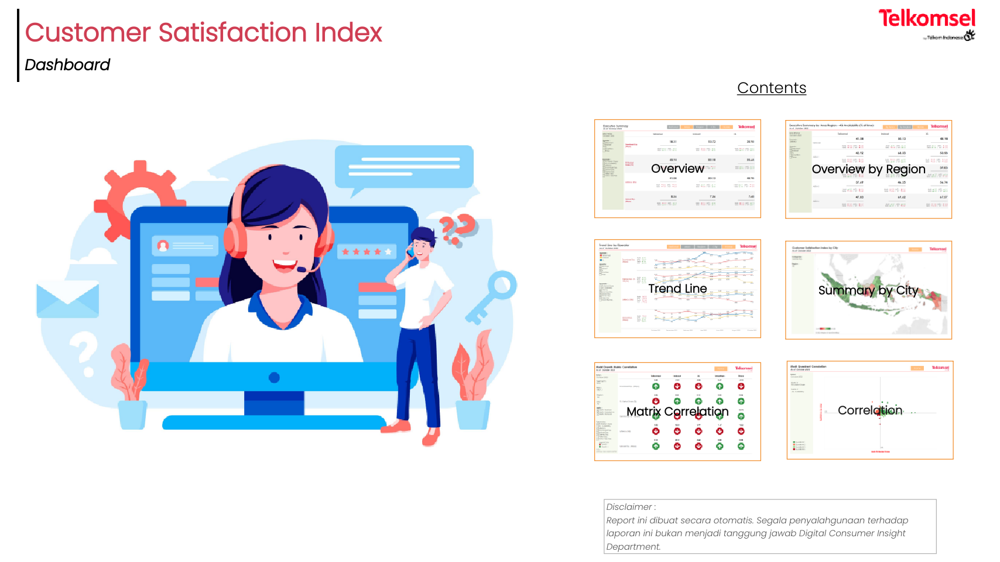
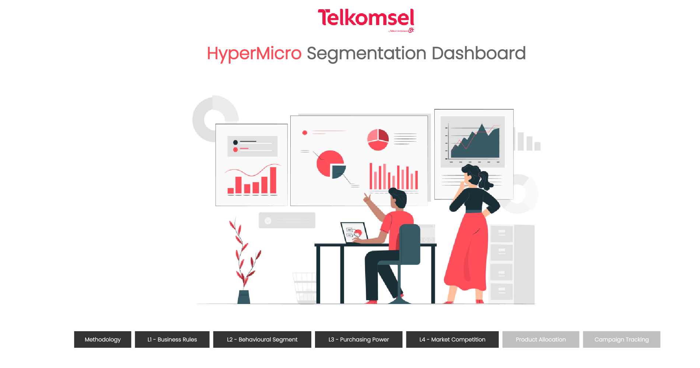
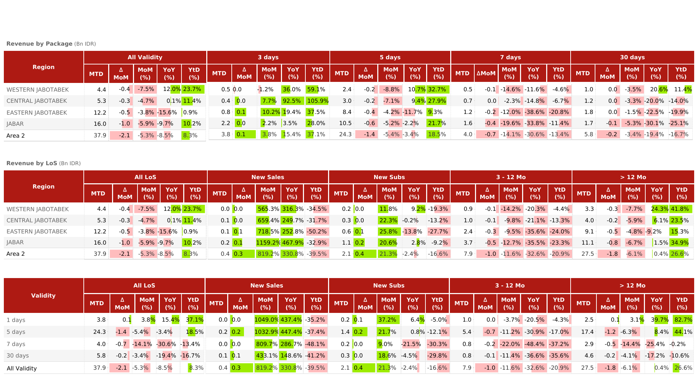
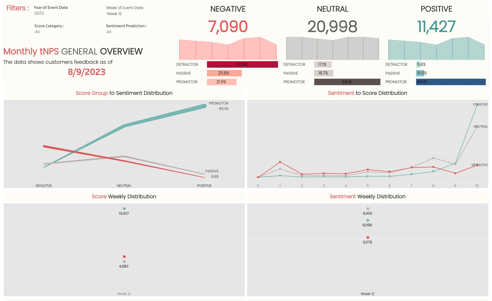
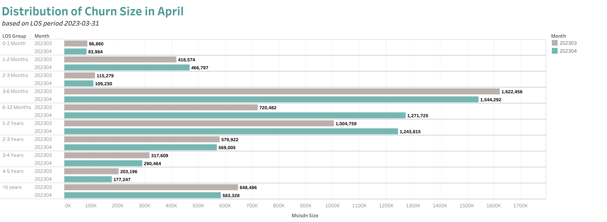

The HTML Presentation Framework
Created by Advance Analytics and Growth Marketing
Sponsored by


Hello There
Welcome to the aurora slide presentation, this will show you examples of what it can do.
This slide will provide information about the data
In the form of text, images, embedded links and much more
Sample bar chart
Sample line chart
Column and row tables
| Region | Sales | Total | Rate |
|---|---|---|---|
| Jakarta | 5000000 | 1000 | 55% |
| Semarang | 5500000 | 1100 | 75% |
| Yogyakarta | 6000000 | 1200 | 80% |
Slide Backgrounds
Please swipe to see all available images.
Customer Satisfaction Index Dashboard

HyperMicro Segmentation Dashboard

Prepaid Performance

Transactional Net Promotor Score

CLS ChurnAnalysis

Telkomsel POIN Campaign Summary